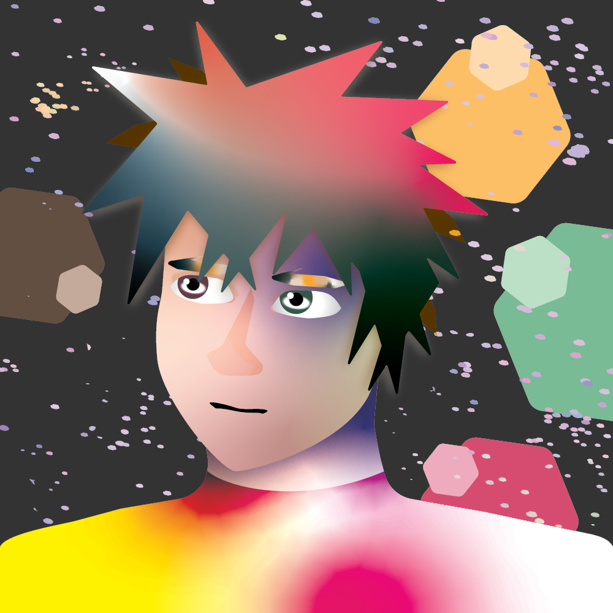

Meet Kyr...
... a seemingly ordinary human being, who possesses an extraordinary ability to understand people's deepest desires and uncertainties. His naturally sweet personality may make him appear naive to some, but it is this very trait that provides him with immense strength. Despite the emotional vulnerability that comes with this ability, Kyr's insight into the human psyche makes him a truly unique and valuable character. Oh, and did I mention that he's actually a program?